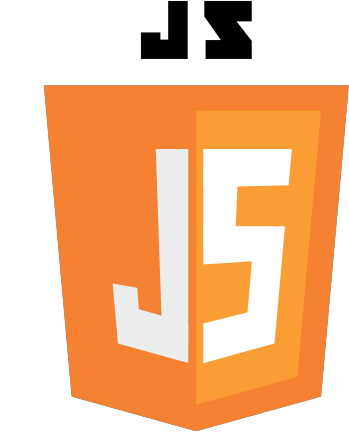

Ferramentas

Meu nome é Andressa, tenho 18 anos. Acredito que tudo que precisamos é ter força de vontade, e por me identificar bastante com a área da tecnologia busco aprender e me especializar nessa área.
Sempre fui a mais tecnológica da família, com facilidades com as atualidades e inovações, desde cedo fui referência nessa área dentro de casa. No começo não sabia ao certo se tecnologia era pra mim, mas com os comentarios principalmente de familiares dizendo ser uma área que tenho facilidade de lidar e teria grande chance de me dar bem, abriram meus olhos, e me apresentaram uma porta que não tinha visto, isso me motivou bastante a buscar mais sobre e ingressar na área da tecnologia.
já consigo me ver crescendo no ramo da tecnologia. E ser referência não só na minha família, mas ser referência feminina no mercado.